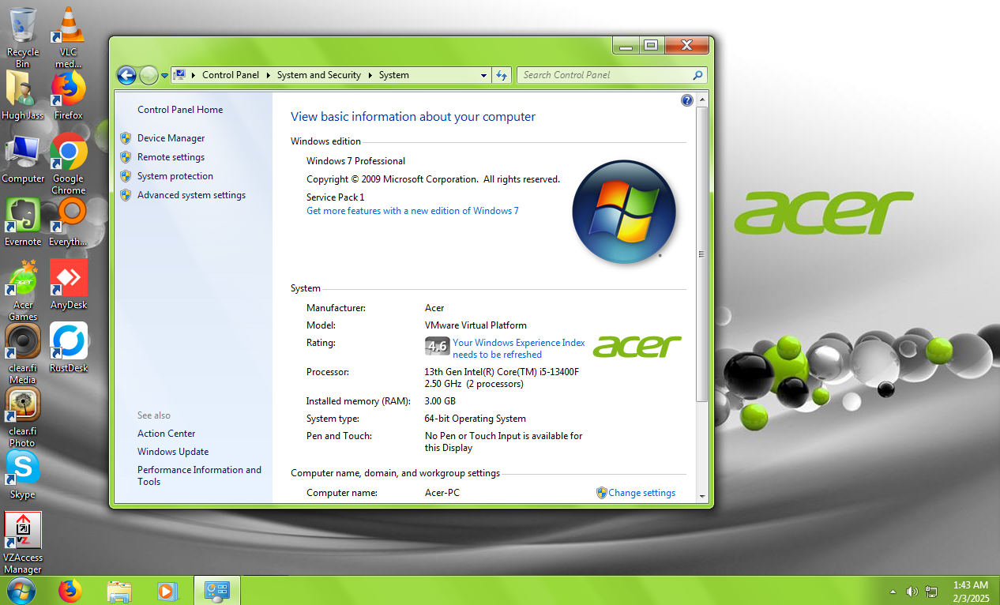

----------
OS: Windows 7 Professional
----------
Rustdesk:
ID: 1 643 717 667
Password: LJ-Vm1-Rustdesk
----------
AnyDesk:
ID: 284 396 642
Password: LJ-Vm1-Anydesk
----------
Usual Operational Hours: 5pm EST-7:30pm EST
----------
Notes:
WARNING: Using RustDesk Web to connect is highly unrecommended. When multiple "web" accounts are connected, I can only talk to the FIRST one. For web accounts, its first come first serve.
If needed, the user password is 1
This VMWare VM emulates a real Acer Aspire from the early 2000s. Some installed programs include alot of Acer bloat, and some other cool things!
Be sure to check the Quick Access folders for some secrets.
----------
VM last updated 2-3-2025